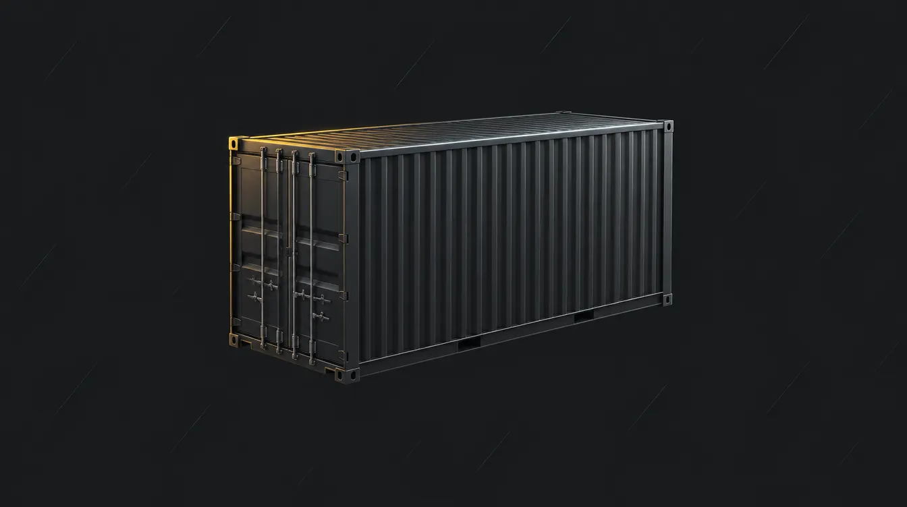
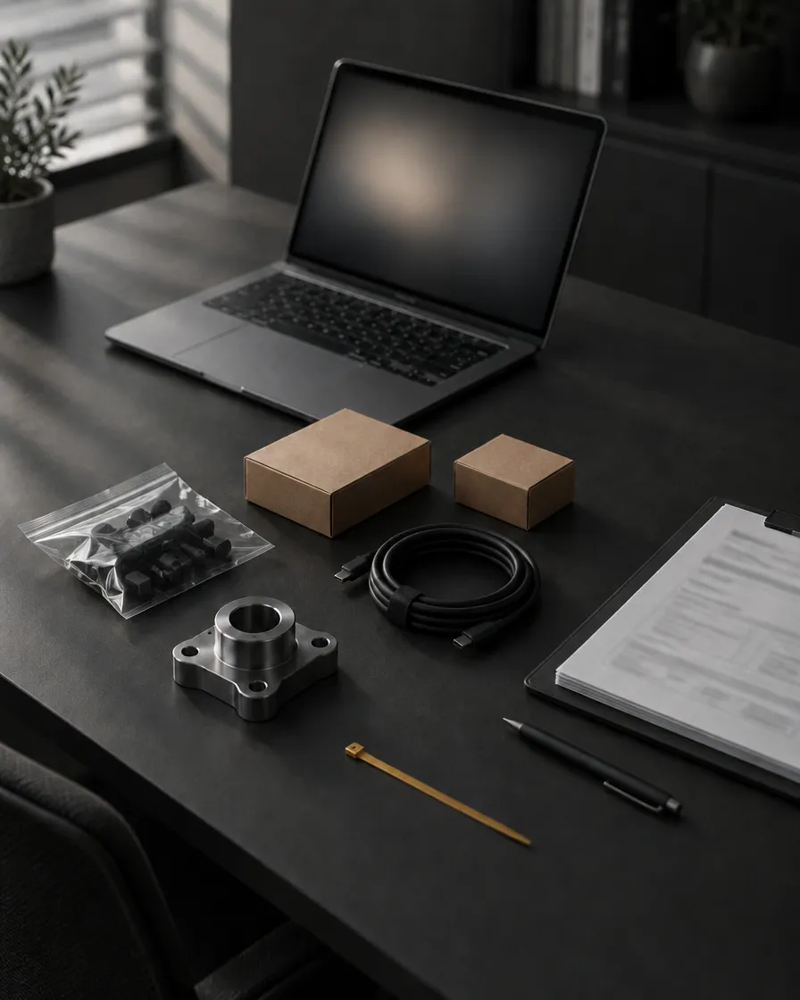

Mentoria de Importação
Faturar não é sobrar.
Frete, imposto, devolução e taxa de marketplace chegam depois da venda. Quando a conta fecha, o mês pode ter girado estoque sem deixar quase nada. A Mentoria são 12 meses para tomar essas decisões antes de pagar por elas.

O problema
O pedido sai. O frete sobe. A margem some.
Quase nunca de uma vez: um imposto fora da conta, um estoque parado, uma devolução que ninguém previu. O faturamento segue parecendo saudável, e o caixa conta outra história.
O que a Mentoria percorre
Segundo o produtor.

-
01
Importação, meses 1 e 2
Importação simplificada e formal, pesquisa de produtos, fornecedores e o cálculo de todos os custos antes de comprar.
-
02
Estratégia e margem, meses 3 a 6
Marca própria, precificação, mix de produtos e alavancagem financeira.
-
03
Empreendedorismo e gestão, meses 6 a 12
Planejamento tributário, processos, plano de expansão, fluxo de caixa e provisionamento.
-
04
Acompanhamento
Calls ao vivo, suporte no WhatsApp 24h, aulas gravadas, ferramentas de margem e pesquisa, grupo com conteúdo diário e acesso aos agentes de importação.
Para quem é
Para quem já vende e não quer descobrir a margem depois da compra.
Não é para quem procura fórmula pronta ou não vai se dedicar por 12 meses.
- Quem já vende e quer organizar a operação.
- Vendedores de marketplace que querem trabalhar a margem importando direto.
- Quem quer criar uma marca própria.
- Quem quer deixar de depender de distribuidores nacionais.
- Quem ainda vai começar: a Mentoria é feita para quem já vende, e o produtor inclui um bônus de mentoria da Shopee por 1 ano.
Decidir sozinho
Em importação, o erro já está pago quando aparece.
O dinheiro sai antes e o produto demora a chegar. Qual o processo correto, quanto de imposto entra na conta, onde está a margem: nem todo contador conhece o assunto, e a resposta costuma vir quando o estoque já chegou. A Mentoria não é curso solto: é conduzida pelo criador da marca Vovô do Mercado Livre, que declara mais de 7 anos importando da China.
- 12 mesesde acompanhamento
- Individual e grupocalls ao vivo e troca entre pares
- Ao vivo e gravadopara estudar no seu ritmo
Investimento
O valor está aqui, sem ligação para descobrir.
R$ 22.000 por 12 meses de mentoria, cerca de R$ 1.833 por mês de acompanhamento. À vista ou em 10 vezes de R$ 2.200 no cartão. O checkout também aceita Pix, boleto e PayPal.
Compra online tem 7 dias de direito de arrependimento (Código de Defesa do Consumidor, art. 49), exercido na plataforma de pagamento. É um direito seu, não um bônus.
Perguntas
Antes de decidir
- Preciso já vender ou importar?
A Mentoria é feita para quem já vende. Quem ainda vai começar pode entrar, segundo o produtor, com um bônus de mentoria da Shopee.
- Corro risco de perder dinheiro?
Importar envolve câmbio, prazo e fiscalização, e nenhum acompanhamento elimina esses riscos. A Mentoria não promete retorno: ela oferece com quem discutir cada decisão.
- O investimento inclui mercadoria?
Não. Comprar produtos é uma decisão separada, com custo próprio.
- Há seleção ou limite de vagas?
O produtor informa que o acesso é mediante aplicação e que cada turma tem número limitado de participantes.